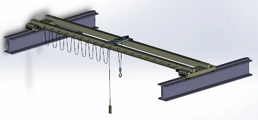
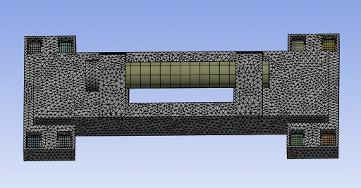
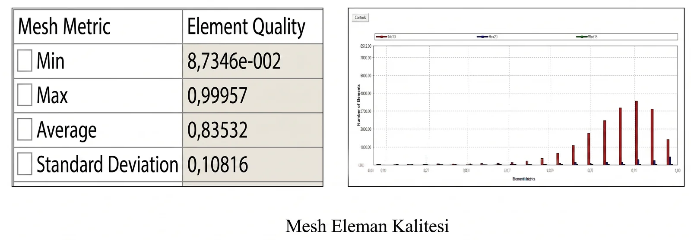
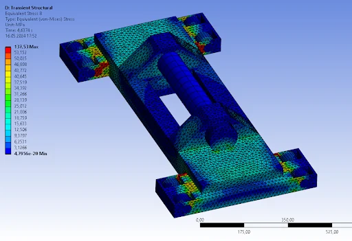
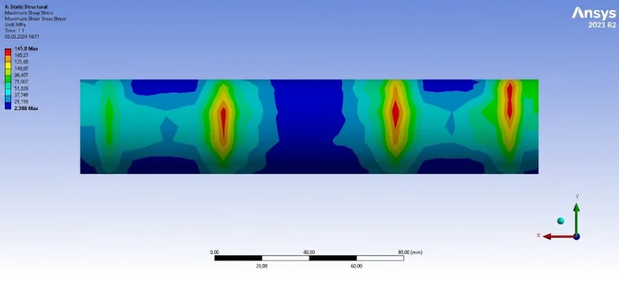
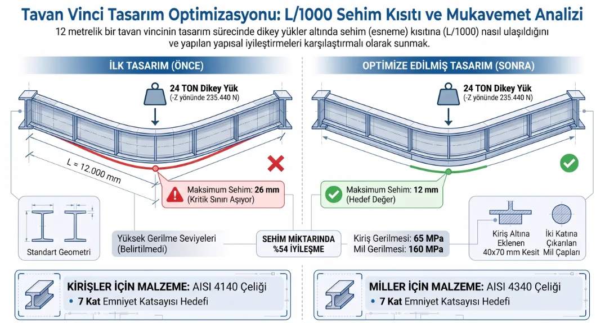

🔍 Büyütmek için tıklayın




Bir tavan vincinin tasarımında sadece 14 milimetrelik fazladan bir esnemenin, tüm bir endüstriyel tesisi ve çalışanları ciddi bir iş güvenliği riskine sürükleyebileceğini biliyor muydunuz?
Bu projede, 24 ton taşıma kapasiteli ve 12 metre açıklığa sahip çift köprülü bir tavan vincinin yapısal sınırlarını ANSYS ortamında nasıl test ettiğimizi, sehim miktarını mühendislik modifikasyonlarıyla nasıl yarıdan fazla düşürdüğümüzü ve kritik bileşenleri nasıl optimize ettiğimizi adım adım inceleyeceğiz.
Bu proje, ağır sanayi kollarında yaygın olarak kullanılan çift köprülü bir tavan vincinin statik dayanımını, modal davranışlarını ve zaman alanındaki dinamik yük tepkilerini incelemek amacıyla ANSYS Workbench ortamında gerçekleştirilmiştir. Yapılan ilk statik analizlerde 12 metrelik açıklıkta standart dışı 26,4 mm sehim yapan yapı, uygulanan takviye kirişi modifikasyonuyla hedef sehim limiti olan 12 mm (L/1000) sınırına başarıyla çekilmiştir. Gerilme analizleri doğrultusunda ana kirişler için AISI 4140, miller için ise AISI 4340 alaşımlı çeliği seçilerek endüstri standardı olan 7 kat emniyet katsayısı garanti altına alınmıştır.
Ağır sanayi tesislerinde çalışacak köprülü vinçlerde en kritik tasarım parametresi sehim sınırıdır. Ulusal ve uluslararası mühendislik standartlarına göre, köprülü vinçlerin kirişlerinde izin verilen maksimum dikey sehim oranı köprü açıklığının binde biridir (L / 1000).
12 metre (12.000 mm) uzunluğundaki köprümüz için bu limit tam olarak 12 mm'dir. Ancak 24 ton (235.440 N) nominal yük altındaki ilk tasarımımız dikeyde ~26,4 mm'lik kabul edilemez bir sehim sergilemiştir. Bu durum yapısal kararsızlığa, yorulma çatlaklarına ve yürüme tekerleklerinin raydan çıkma risklerine yol açabileceği için tasarımın revize edilmesi zorunlu hale gelmiştir.
Şekil 1: İlk tasarım (26 mm sehim) ile optimize edilmiş tasarımın (12 mm sehim) karşılaştırmalı özeti (Büyütmek için görsele tıklayın).
Problemi çözmek amacıyla bilgisayar destekli mühendislik (CAE) süreçleri sistematik bir şekilde işletilmiştir:
Burada alan atalet momentini temsil eden \( I \) değeri dikdörtgen kesitler için kesit yüksekliğinin (\( h \)) küpüyle doğru orantılıdır. Bu prensipten yararlanılarak ana kirişlerin alt kısmına uzun kenarı dikey (Z) doğrultuda olacak şekilde takviye mukavemet kirişi entegre edilmiş ve kritik mil çapları iki katına çıkarılmıştır.
Yapılan geometrik iyileştirmelerin ardından gerçekleştirilen nihai analizler, tasarımın hedeflenen kriterleri başarıyla karşıladığını kanıtlamıştır:
Bu çalışmada, ağır sanayi kısıtlarına sahip çift köprülü bir tavan vincinin ANSYS Workbench ortamında tasarım doğrulama ve FEA optimizasyon süreçleri tamamlanmıştır.